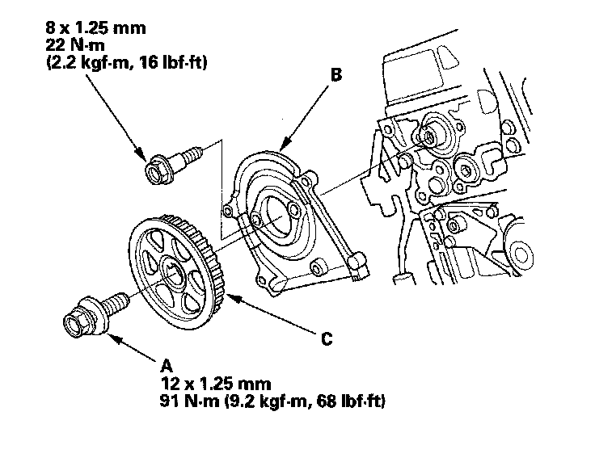

Camshaft Gear/Sprocket: Service and Repair
Camshaft, Rocker Arm Assembly, Camshaft Seal, and Pulley Installation1. Apply a light coat of new engine oil around the camshaft oil seal.
2. Gently tap the new camshaft oil seal (A) into the cylinder head.
-1 Tap the camshaft oil seal in squarely.
-2 Install the oil seal about 0.5-1.5 mm (0.02-0.06 in.) below the surface of the cylinder head.
3. Insert the camshaft (B) into the cylinder head, then install the camshaft thrust cover (C). Always use a new O-ring (D).
4. Check that the oil seal lips are not distorted.
5. Install the solid dowel pins (E) and the hollow dowel pins (F).
6. Loosen the valve adjusting screws.
7. If the rocker arm assembly is disassembled, reassemble the rocker arm assembly.
8. Set the rocker arm assembly in place, and loosely install the bolts. Make sure that the rocker arms are properly positioned on the valve stems.
9. Tighten each bolt two turns at a time in the sequence as shown to ensure that the rockers do not bind on the valves.
NOTE: Apply new engine oil to the threads and flange of the exhaust rocker shaft mounting bolts.
10. Install the front injector base and rear injector base. Always use a new gasket.
11. Apply new engine oil to the threads of the camshaft pulley mounting bolt (A). Install the back cover (B), then install the camshaft pulley (C).
